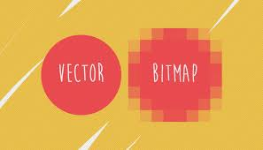

Bitmap betekent letterlijk: een plaatje dat uit bits is opgebouwd. Een van de manieren waarop een grafische afbeelding op een schijf bewaard kan worden, is door de tekening punt voor punt te beschrijven. Dat is mogelijk omdat een tekening zowel op het scherm als in druk uit puntjes is opgebouwd. Zo'n puntje heet een pixel (een samentrekking van picture element). Van elke pixel wordt de kleur beschreven in een aantal bits; hoe meer bits, des te meer kleur er mogelijk zijn. Een zwartwit-plaatje heeft aan één bit per pixel genoeg, met 16 miljoen kleuren zijn er 24 bits per pixel nodig. Het aantal bits per pixel wordt ook wel kleurdiepte genoemd. Een bitmap is daarmee een afbeelding die bestaat uit een rechthoekig raster van vierkantjes. Elke pixel bevat informatie die beschrijft of de pixel zwart of wit is, of dat de pixel een kleurwaarde heeft.
Afbeelding die uit lijnen is opgebouwd. Door deze manier van vormen definiëren kan de afbeelding op elke grootte er goed uitzien, omdat bij elke keer bekijken de vorm opnieuw berekend wordt. Dit in tegenstelling tot bitmapafbeeldingen, waarbij de afbeelding uit beeldpunten is uitgebouwd. Een sterke vergroting leidt daarbij tot een erg blokkig beeld.
Net als tekst, kleuren en afbeeldingen is geluid ook een vorm van informatie die we willen vastleggen in een computer. Met een microfoon is het mogelijk om geluid, bijvoorbeeld muziek of een stem, op te nemen. De microfoon zet de trilling in de lucht om in een elektrisch signaal. Een computer kan dit signaal omzetten naar digitale waarden. Dit proces wordt samplen genoemd. Tijdens het samplen wordt er een opname gemaakt bijvoorbeeld 1 keer per seconden. Dat kan je dan in een grafiek zetten op de horizontale as zie je de tijd en verticale as zie je de sterkte van het geluid.
Klik hier om een uitlegfilmpje te kijken.
Rohan Groen, rohan.groen@vlietlandcollege.nl